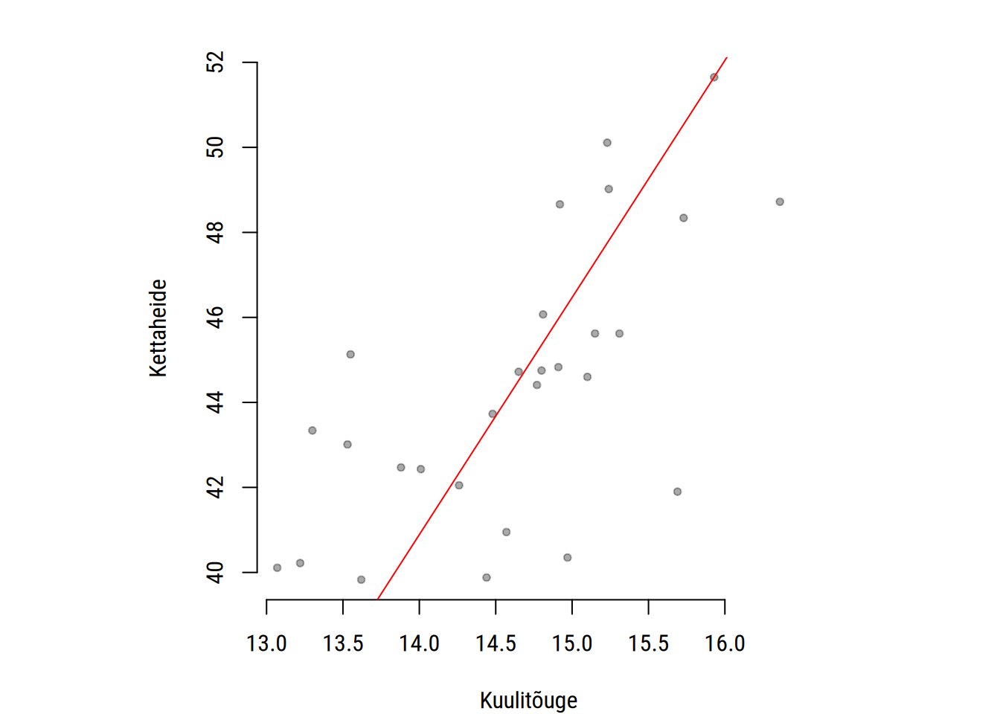
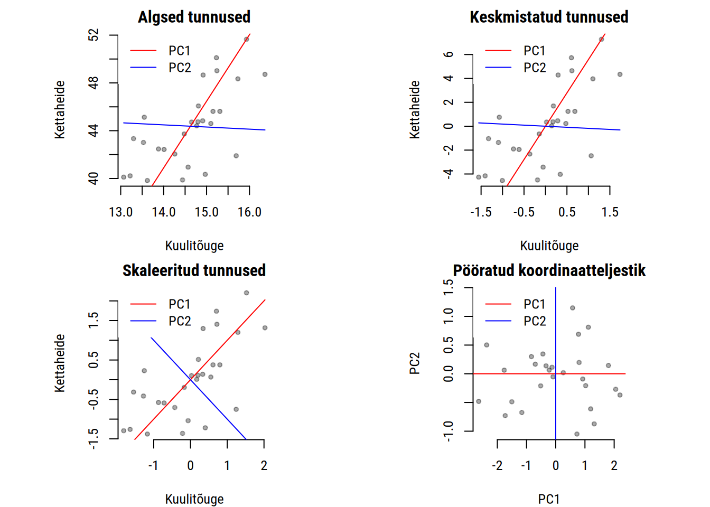
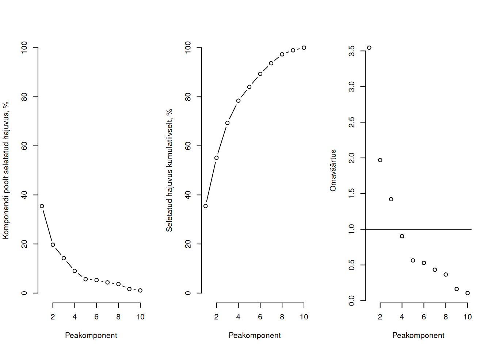

Nii nagu peaaegu kõik nähtused on seotud mõne teise nähtusega, on ka ühte andmetabelisse sattunud tunnuste vahel enamasti vähemalt nõrk korrelatsioon. Ühe tunnuse hajuvus on seega vähemalt osaliselt peaaegu alati seletatav mõne teise tunnuse hajuvusega. Seda kattuvust tunnuste hajuvuses saame kasutada selleks, et koondada mitu tunnust üheks või mitmeks uueks tunnuseks nii, et võimalikult vähe teavet läheb kaduma. Just see ongi lihtsustatult peakomponentide analüüsi tööpõhimõte.
Mõiste
Peakomponentide analüüsi (principal component analysis, PCA) käigus koondatakse mitu tunnust peakomponentideks nii, et võimalikult suur osa algsest hajuvusest oleks koondunud esimestesse peakomponentidesse.
Seega on peakomponentide analüüs sobilik olukorras, kus soovime võtta mitu tunnust kokku ühena. Selline probleem tekib nt kümnevõistlusel, kus paljude erinevate alade tulemuste alusel tuleks määrata igale võistleja punktisumma. Uurimegi järgnevalt peakomponentide analüüsi 2004. aasta olümpiamängude kümnevõistluse näitel. Kuna jooksude korral näitab kõrgem väärtus kehvemat tulemust, siis muudame vastavate tunnuste väärtused negatiivseteks, et neid oleks hiljem lihtsam tõlgendada.
Peakomponentide analüüsi eesmärk on niisiis võtta kokku algsete tunnuste ühine hajuvus väiksema arvu uue tunnusena. Täpsemalt on eesmärk leida algsete tunnuste standardiseeritud lineaarsed kombinatsioonid, mis seletaksid võimalikult suurt osa hajuvusest andmetes. Iga lineaarne kombinatsioon esindab ühte viisi, kuidas teisendada algsed tunnused uuteks tunnusteks. Mõnel juhul piisab meile ainult paarist sellisest lineaarsest kombinatsioonist, aga sõltuvalt analüüsi probleemist võime kasutada ka mitut.
Iga lineaarne kombinatsioon on peakomponent, mis võtab kokku kordumatu osa andmetes esinevast hajuvusest. Peakomponente võib esitada kujul \[\xi_j = b_{j1}x_1 + b_{j2}x_2+ ... a_{jp}x_p,\] kus \(b_{jp}\) on tunnuse \(x_p\) kaal \(j\)ndas peakomponendis \(\xi_j\) . Nii võib peakomponente mõista sisuliselt tunnuste kaalude kogumitena. Peakomponentide järjestus või järjekorranumber on sealjuures tähtis: esimene peakomponent seletab võimalikult suure osa hajuvusest andmetes ja iga järgnev eelnevate poolt selemata jäänud osa.
Suurim võimalik peakomponentide arv on \(min(p, n-1)\), kus \(p\) on tunnuste ja \(n\) vaatluste arv. Kuna enamasti \(p > n\) , siis leitakse tavaliselt nii palju peakomponente kui oli algseid tunnuseid. Kõik peakomponendid kokku sisaldavad seega kogu hajuvust nende aluseks olevates andmetes selliselt, et võimalikult suur osa hajuvusest on koondatud esimestesse peakomponentidesse. Seega kui valime ainult esimesed peakomponendid, siis läheb kaduma küll osa hajuvusest, aga see kadu on võimalikult väike.
28.2 Peakomponentide leidmine
On mitu viisi, kuidas mõtestada peakomponentide leidmist. Kõige loomulikum lähenemine on kujutada vaatlusi andmepilvena tunnuste ruumis. Mitme tunnuse hajuvuse saame kokku võtta, kui tõmbame sellest andmepilvena järjest läbi jooni, millest igaüks esindab ühte peakomponenti. Alustame sealjuures esimesest peakomponendist, mis peaks võtma kokku võimalikult suure osa hajuvusest andmepilves. Esimene peakomponent arvutatakse seega nii, et see
järgiks ja esindaks suurimat hajuvust andmepilves ja
on sirgena võimalikult lähedal kõikidele andmepunktidele arvestades täisnurkset (ortogonaalset) kaugust.
Näeme jooniselt, et kuulitõuke ja kettaheite soorituste vahel on positiivne korrelatsioon. Seega saame vähemal osaliselt nende kahe tunnuse hajuvuse kokku võtta peakomponendiga, mida näitab punane joon.

Selliselt on esimese peakomponendi leidmine sarnane vähimruutude meetodile (Peatükk 22). Erinevalt vähimruutude meetodil leitud regressioonsirgest esimene peakomponent aga
seletab kõikide tunnuste hajuvust võrdväärselt ja mitte ainult tagajärgse tunnuse hajuvust,
ei sõltu otseselt ruuthälvetest.
Suurima hajuvuse tuvastamiseks teisendatakse andmepilv (andmemaatriks) uuele koordinaattasandile. See hõlmab enamasti alljärgnevaid samme:
Sealjuures toimub viimasel sammul telgede pööramine nii, et esimene peakomponent seletab võimalikult suure osa hajuvusest andmepilves ja iga järgnev peakomponent on lihtsalt täisnurkne (ortogonaalne) eelneva suhtes.
Eelnevalt kirjeldatud samme näitlikustab alljärgnev joonis.

Seega sõltuvad leitud peakomponendid andmepilve asukohast ja hajuvusest telgedel.
Pea meeles!
Peakomponendide analüüsil tuleb silmas pidada algsete tunnuste keskmisi väärtuseid ja standardhälbeid.
Tunnused peaksid olema keskmistatud ehk igast tunnuse väärtusest tuleb lahutada kogu tunnuse keskmine väärtus.
Tunnused võib skaleerida ehk iga tunnuse väärtused võib jagada läbi tunnuse standardhälbega. Kui tunnused on mõõdetud samal skaalal, siis võib olla parem seda mitte teha.
Matemaatiliselt arvutatakse peakomponendid kas korrelatsiooni-, kovariatsiooni või andmemaatriksi dekomponeerimise alusel. Selle tulemusel leitakse andmete
skaleerimist kirjeldavad omaväärtused (eigenvalues) ehk iga peakomponendi kordajad ja
pööramist kirjeldavad omavektorid (eigenvectors) ehk iga peakomponendi pool seletatud hajuvus.
R keeles saame peakomponentide leidmiseks kasutada funktsiooni prcomp(). Tunnused keskmistatakse vaikimisi (center = TRUE), aga enamasti peaksime lisama ka argumendi scale = TRUE, et lisaks sellele tunnuse väärtused ka skaleerida.
peakomp <-prcomp(kv, scale =TRUE)
28.3 Eeldused
Kõige olulisem peakomponentide analüüsi eeldus puudutab tunnuste mõõteskaalasid: ühist hajuvust saab leida võtta ainult pideval või vähemalt arvskaalal mõõdetud tunnuste korral. Nimi ja järjestustunnusete alusel saab leida peakomponendid, kui need eelnevalt pidevateks tunnusteks teisendada.
Tunnuste koondamiseks ühise hajuvuse alusel peab see ühine hajuvus andmetes olemas olema. Seega peab tunnuste vahel esineva piisav lineaarne korrelatsioon.
Kümnevõistluse võistlusalade vahel esinevad üldiselt ootuspärased ja sageli tugevad korrelatsioonid.
library('gplots')
Attaching package: 'gplots'
The following object is masked from 'package:stats':
lowess
Kui vaatluste seas esineb erindeid, siis võivad need märkimisväärselt mõjutada peakomponentide aluseks olevat andmepilve teisendamist.
28.4 Peakomponentide arv
Kuigi enamasti leitakse analüüsi käigus peakomponente sama palju kui oli nende aluseks olevaid tunnuseid, siis on asjakohased tavaliselt ainult esimesed nendest. Mitut esimest peakomponenti tõlgendada või edasises analüüsis kasutada, sõltub sellest, kui mitut on vaja analüüsi probleemi lahendamiseks[^Nt vaatluste klasterdamise tulemuse näitlikustamiseks tunnuste alusel kahemõõtmelisel joonisel piisab kahest peakomponendist.].
Soovitus
Sobiva arvu komponentide määramisel võib lähtuda alljärgnevatest tingimustest.
Määra kõige madalam hajuvus andmetes, mida peakomponendid seletama peaksid ja vali nii palju peakomponente kui on selleks vajalik.
Kasuta peakomponende, mille omaväärtus on vähemalt üks.
Leia omaväärtuse joonisel nö õlg ja vali peakomponendid enne seda.
Peakomponentide poolt seletatud hajuvust saab joonisel kujutada mitmel viisl.
par(bty ='n', mfrow =c(1,3))plot(peakomp$sdev^2*100/length(peakomp$sdev), type ='b', ylim =c(0,100), xlab ="Peakomponent", ylab ="Komponendi poolt seletatud hajuvus, %")plot(cumsum(peakomp$sdev^2*100/length(peakomp$sdev)), type ='b', ylim =c(0,100), xlab ="Peakomponent", ylab ="Seletatud hajuvus kumulatiivselt, %")plot(peakomp$sdev^2, type ='p', xlab ="Peakomponent", ylab ="Omaväärtus")abline(h =1)

Näeme nt, et esimene peakomponent üksi seletab 35% kogu hajuvusest ja 80% hajuvuse seletamiseks on vaja vähemalt viite peakomponenti. Kõige parempoolsel, omaväärtuse joonisel (scree plot) näeme, et nö õlg on pärast neljandat peakomponenti, nii et antud andmete korral võiksimegi piirduda nelja peakomponendiga.
28.5 Tõlgendamine
28.5.1 Seletatud hajuvus
Osakaal koguhajuvusest andmetes, mille \(j\)ndas peakomponent seletab on arvutatav omaväärtuste \(\lambda\) alusel: see on vastava omaväärtuse osa omaväärtuste summast ehk \(\lambda_j / \Sigma^p_{j=1} \lambda\).
Peakomponentide omaväärtused saame R keeles, kui võtame peakomponentide standardhälbed ruutu.
Näeme, et esimene peakomponent esindab umbes 4 tunnuse hajuvust.
Kuna omaväärtuste summa \(\Sigma^p_{j=1} \lambda\) on võrdne tunnuste arvuga, siis peakomponendi omaväärtus näitab, kui mitme algse tunnuse hajuvust või kui mitut algset tunnust vastav peakomponent esindab. Seega saame iga peakomponendi poolt seletatud hajuvuse osakaalu, kui jagame vastava omaväärtuse tunnuste arvuga.
Näeme, et esimene peakomponent seletab 35% hajuvusest andmepilves ja kaks esimest peakomponenti üle poole. Sama tulemuse saame ka peakomponendi objekti kokkuvõttest funktsiooni summary() abil.
Seletatud hajuvusest lähtudes saame leida ka, kui suure osa hajuvusest seletavad teatud arv esimesi peakomponente. Sisuliselt näitab seletatud hajuvus, kui suur osa andmetes olevast teabest jääb alles, kui võtame algsed tunnused kokku teatud arvul peakomponentidena.
28.5.2 Kordajad
Peakomponendid tuletatakse tunnustest ja nii on igal tunnusel igale peakomponendile. Teisisõnu, iga tunnus laadib igat peakomponenti ja sedalaadimist mõõdab vastav kordaja või laadung (loading). Neid võib mõista ka kui tunnuste kaale. Kordajaid saab kasutada peakomponentide tõlgendamiseks, et anda neile sisuline tähendus.
R keeles kuvatakse kordajaid, kui sisestame käsureale lihstalt peakomponendi objekti või uurime selle objekti osist rotation.
Näeme, et esimene peakomponent iseloomustab kõikide alade soorituste nõrkust, sest kõik kordajad on negatiivsed. Seega on iseloomustab esimene komponent võistleja üldist võimekust või kui arvestada negatiivseid kordajaid, siis võimetust. Teine komponent kirjeldab sooritust jooksudel, aga on negatiivselt seotud viskealadega (shotput, discus, javeline).
Neid kordajaid saame kasutada selleks, et leida peakomponentide väärtused iga vaatluse jaoks. Kui korrutame iga kordaja sellele vastava tunnuse väärtustega, siis saame peakomponentide skoorid. Need on peakomponente esindavad uued tunnused, mis näitavad peakomponendi väärtust iga 28 võistleja kohta.
Esimese peakomponendi skoore uurides näeme, et esimesed võistlejad on keskmisest märkimisväärselt võimekamad. Teise peakomponendi skoorid näitavad aga, et esimesed võistlejad on jooksualades keskmisest nõrgemad, aga paremad viskealadel.
Sealjuures tuleb arvestada tunnuste sisu. Mõne tunnuse kõrgem väärtus võib peakomponendi tähendusega hästi sobida, samas kui teise tunnuse korral sobiks paremini madalam väärtus. Sellisel juhul võib peakomponentide tõlgendamise lihtsustamiseks vahetada osade tunnuste märk, nt korrutades nende väärtused väärtusega \(-1\).
Pea meeles!
Esimese peakomponendi suund uuel koordinaatteljestikul on juhuslik. Seetõttu on igal peakomponentide arvutamisel kordajate absoluutväärtused küll samad, aga positiivsed märgid võivad järgmisel arvutamisel olla negatiivsed ja vastupidi.
29 Peakomponentide joonis
Kahte esimest peakomponenti saame kujutada erilisel peakomponentide hajuvusjoonisel (biplot), millel on esitatud ühtaegu vaatlused ja tunnused.
Punktid näitavad vaatluste paiknemist kahe esimese peakomponendi suhtes.
Joonte suund näitab iga tunnuse ja vastava peakomponendi laadimise suunda.
Joonte pikkus näitab kordaja absoluutväärtust.
Nurk joonte vahel iseloomustab vastavate tunnuste omavahelist korrelatsiooni.